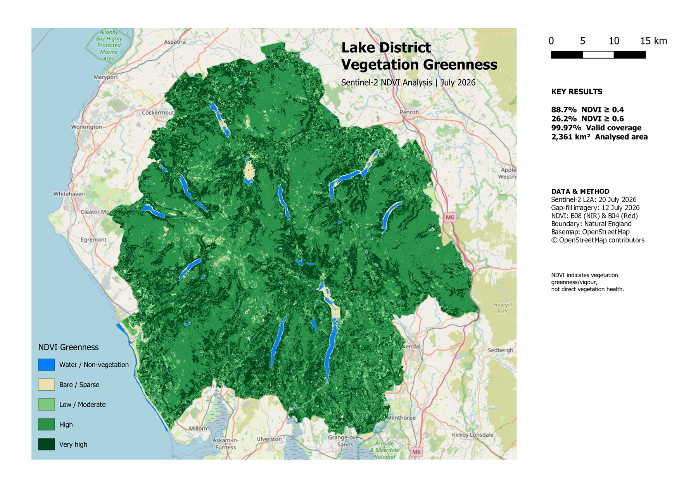

EARTH OBSERVATION • REMOTE SENSING • GIS
Lake District
Vegetation Greenness
A satellite-based analysis of vegetation greenness across the Lake District National Park using Sentinel-2 imagery and the Normalised Difference Vegetation Index (NDVI).

Final vegetation greenness analysis produced from Sentinel-2 imagery acquired in July 2026.
01 — OVERVIEW
Analysing vegetation across the Lake District.
This project uses Sentinel-2 satellite imagery to analyse vegetation greenness across the Lake District National Park. The aim was to create a continuous vegetation map while developing a practical workflow for processing and interpreting Earth observation data.
I calculated the Normalised Difference Vegetation Index (NDVI) from red and near-infrared satellite bands, removed pixels affected by cloud and cloud shadow, and combined imagery from two acquisition dates to improve coverage across the study area.
02 — DATA
Sentinel-2 multispectral imagery.
The analysis uses Sentinel-2 Level-2A imagery from the Copernicus Earth observation programme. Level-2A products provide atmospherically corrected surface reflectance, making them suitable for analysing vegetation using spectral indices such as NDVI.
The primary imagery was acquired on 20 July 2026, with imagery from 12 July 2026 used to fill areas obscured by cloud and cloud shadow. Multiple Sentinel-2 tiles were combined to provide coverage across the Lake District National Park.
Near Infrared • 10 m
Red • 10 m
Scene Classification • 20 m
Natural England • Lake District National Park
03 — METHODOLOGY
From satellite imagery to vegetation analysis.
NDVI was calculated from Sentinel-2's near-infrared (B08) and red (B04) bands. Healthy, photosynthetically active vegetation typically absorbs red light while reflecting strongly in the near-infrared, allowing vegetation greenness to be estimated from the difference between the two bands.
(B08 − B04) / (B08 + B04)
Cloud-contaminated pixels were identified using the Sentinel-2 Scene Classification Layer (SCL). Cloud shadow, medium-probability cloud, high-probability cloud and thin cirrus classes were excluded before the imagery was combined.
Imagery from 20 July formed the primary dataset. Where valid data was unavailable, cloud-free pixels from 12 July were used as a temporal gap fill. The completed raster was then clipped to the Lake District National Park boundary and classified into five NDVI greenness ranges.
Sentinel-2 L2A
Calculate NDVI
Cloud Mask
Mosaic Tiles
Temporal Gap Fill
Clip & Classify
04 — RESULTS
Vegetation greenness across the National Park.
The final dataset achieved approximately 99.97% valid coverage across the Lake District National Park, with only a very small area remaining without valid observations after temporal gap filling.
NDVI ≥ 0.4
NDVI ≥ 0.6
Valid coverage
Analysed area
Approximately 62.5% of the classified area recorded NDVI values between 0.4 and 0.6, while a further 26.2% recorded values of 0.6 or greater. Together, these classes account for approximately 88.7% of the analysed area.
05 — INTERPRETATION & LIMITATIONS
Understanding what NDVI can — and cannot — tell us.
The results show a strong vegetation signal across much of the Lake District during July 2026, with 88.7% of the analysed area recording NDVI values of 0.4 or greater.
However, NDVI should be interpreted as an indicator of vegetation greenness and vigour rather than a direct measurement of vegetation health. NDVI values can be influenced by vegetation type, soil, moisture, atmospheric conditions and the timing of image acquisition.
Cloud and cloud-shadow contamination also presented a challenge. These observations were removed using the Sentinel-2 Scene Classification Layer, with imagery from 12 July used to fill gaps in the primary 20 July dataset. This produced approximately 99.97% valid coverage, although the final raster therefore contains observations from two different dates.
The NDVI classes used in this project are interpretive ranges for visualising relative vegetation greenness. They should not be treated as universal thresholds for vegetation health.
06 — SKILLS DEMONSTRATED
Technical skills developed through the project.
This project provided practical experience working with real Earth observation data and building a complete raster analysis workflow from raw satellite imagery through to a finished cartographic product.